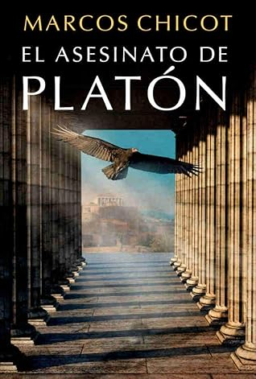

El asesinato de Platón
Reseña por Jorge I. Zuluaga

Ver reseña en GoodReads (necesita cuenta)
Ya había tenido la oportunidad de leer las 3 novelas anteriores de Chicot, El Asesinato de Pitagoras, el Asesinato de Sócrates y La Hermandad y como, creo, nos pasa muchos amantes de la novela histórica, quede prendado inmediatamente por su aproximación original a la vida de estos grandes personajes.
La verdad, y perdonen la insistencia, no creí que pudiera hacer nuevamente con Platón lo que hizo con Socrates. Y es que, ¿qué crímenes podrían haberse cometido alrededor de la vida del más grande discípulo de Socrates como para merecer un nuevo thriller?. Todos sabemos que Socrates murió en la cárcel; se entiende entonces lo de su "asesinato"; pero ¿y Platón?. Ciertamente, mi propia ignorancia de la vida del filósofo no me permitía entender lo ¨movida¨ que había sido (y al parecer lo fue también la vida de todos los personajes de su época). Así que con asesinato o no, la violencia no falto en la vida de estos grandes pensadores.
Esa es una de las características de las novelas de esta saga: demuestran que los filósofos más influyentes de la historia pueden ser muy conocidos por sus ideas (o por su influencia), pero de su vida poco sabemos los que nos creemos muy entendidos. Es cierto que mucho de lo que recrear Chicot en el libro es ficticio (él mismo lo reconoce en sus notas finales), pero el realismo de las situaciones, la descripción de la sociedad de su tiempo y por supuesto, los eventos históricos que si ocurrieron, hacen que la novela tenga ese tono de realidad que nos atrae a los apasionados por este género.
Para quiénes no han leído ninguna de las novelas de esta saga, "El asesinato de Platón" (como sucede con todos los otros libros) narra eventos que ocurren alrededor de la vida del filósofo, y de otros contemporáneos, entre pensadores, gobernantes, tiranos y líderes militares. En este libro en particular destacan las historias de personajes Tebanos (el gran general Epaminondas), Espartanos (el rey Agesilao), Siracusanos (los dos Dionisiosios y el proyecto de filósofo-gobernante, Dion de Siracusa) y naturalmente los personajes Atenienses (Platón y otros maestros de la Academia, incluyendo a Axiotea de Fliunta, una de los dos mujeres que alcanzaron el grado de maestras en la Academia y que inspiró además el personaje de Altea).
Como sucede en los otros libros, las escenas de las batallas son alucinantes. Y lo mejor, están inspiradas en enfrentamientos reales que ocurrieron durante los convulsos años en los que se desarrolla la segunda parte de la vida de Platón. Así mismo, las escenas de acción, suspenso, incluso erotismo, son inmejorables, como las de sus novelas anteriores. Esta novela viene, como decimos en mi tierra, con todos los juguetes.
Me encantaron los personajes femeninos de la historia. Para nadie es un secreto el lugar secundario que ocupaban en la sociedad helénica las mujeres. Segregadas al hogar o a trabajos menores, mayoritariamente analfabetas y con su vida dependiendo de la decisión de los hombres de su familia. A pesar de ello, Marcos Chicot siempre logra poner en el centro de la novela grandes personajes femeninos. En está resalta naturalmente Altea de Atenas, que continúa con la tradición de su abuela, Deyanira de Esparta, a la que conocimos en el Asesinato de Socrates. Pero también son notables los personajes femeninos malvados como Melisa, la esclava de la casa de Calipo y Altea.
Otro de los beneficios que se obtienen al leer las novelas de esta saga es el de ganar un conocimiento inicial de las ideas de los grandes filósofos de los que tratan. Las novelas de Marcos Chicot son como una "guía para dummies" con aventuras y acción al pensamiento de Pitagorás, Socrates y Platón.
A través de "El Asesinato de Platón" pude, por ejemplo, conocer, y en algunos casos por primera vez (y me avergüenzo de decirlo) las ideas políticas, incluso aquellas ideas sobre el amor de Platón que tanto influenciaron (y lo siguen haciendo) a pensadores de todos los tiempos. Hay apartes completos de la novela en las que se exponen las ideas que el filósofo transmite en sus famosos "Diálogos". Me encanto, en particular, la exposición novelada de las ideas de "El banquete", donde Platón reflexiona sobre el amor. Después de leer esta novela, creo que me decidiré finalmente a buscar y leer esos famosos e influyentes diálogos. ¡Gracias a Marcos Chicot por su labor de divulgación de la filosofía!
Quedo a la espera de la próxima novela de Chicot. No es difícil predecir que nos sorprenderá, ojalá muy pronto, con "El asesinato de Aristóteles". Empiecen ya la saga y no esperen a que Chicot nos sorprenda con otro nuevo libro (¡estoy seguro que lo hará!)
¡Larga vida a esta saga!